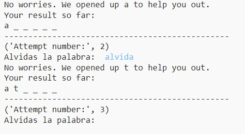

Introducing...CLUEDLE! This original game was created by a group of freshmen at EHS, in an effort to help students taking Espanol dos study for vocabulary quizzes. Check out the instructions below, and then click the link to play!
1. Start by entering a word, based on the unit and letters included (given information)

2. If your guess matches a letter, it will reveal which letter matched, and you continue. If not, the program gives a letter to help you. No worries, keep guessing!
3. You get a total of 10 guesses. Once you get it, the answer is provided, along with how many points you got based on your performance. Otherwise, you lose.
4. That's all you need to know - click below and start playing!
Click here to visit our game , running on Trinket!